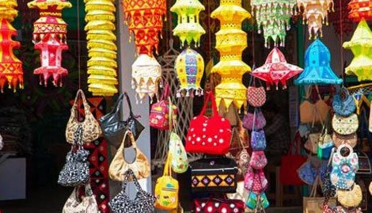

Puri District is a coastal District on the eastern part of Odisha, India. This District needs no introduction, being the abode of Lord Vishnu, most popularly known as Lord Jagannath. This District derives its name from the heritage city of Puri, one of the four pilgrimage centres of India. Covering an area of 3051 sq/kms, the District may be divided into two dissimilar natural divisions-the Littoral tract and the Level alluvial tract. It is also located at 19’ 28 N Latitude 26’ 35 N, 84’ 29 E. Longitude 86’ 25 E. Its altitude is at sea level. The population of the District is 16, 98, 730 (as per 2011 Census) and the density of population is 488 people per sq. km. The rural population is 14,33,800 and the urban, 2,64,930. SC population is 3, 25, 133 and ST is 4, 482. The District is quite literate in the sense that its literates number 1, 291,939 as against the illiterates numbering 4, 06, 791. Paddy, wheat, mung, biri, kulthi and groundnut are some of the major crops grown in the District.
The number of rivers flowing through the District helps in sustaining the agriculture. Being in close proximity to the Bay of Bengal, this District has tropical climate. The summers are from March to June, monsoons from June to September and winters are from October to February. The minimum temperature of the District is approximately 16. 45 degrees Celsius and the maximum 33. 9 degrees Celsius.

Handicraft and cottage industries of this District is famous the world over, its original source being the temple craft of Lord Jagannath and the Sun Temple at Konark. The rich traditional culture and heritage of the District gives a boost to this industry. The important products of this industry are in applique, stone carving, patta chitra, wood carving, modern patch work, terracotta, bell metal, and sea shell items etc. The District Industries Centre, on its part has imparted training and upgraded the skill of the traditional artisan families and other economically weaker sections of the people, thus improving their per capita income. It has introduced many promotional schemes and also promotes handicraft training schools and coir training centers etc. There are also a number of small scale industries running in this District.

Puri is famous for the world famous Jagannath Temple & Longest Golden Beach. It is one of the Dhamas (Holiest of the holy place) out of four Dhamas i.e. Puri, Dwarika, Badrinath & Rameswar, in India. Lord Jagannath, Devi Subhadra and elder brother Balabhadra are being worshipped in Puri (The Purusottama Kshetra). The deities are seated on the Bejeweled Pedestal (Ratna Simhassana). Shree Jagannath Puri Temple is one of the most impressing monuments of the Indian State Odisha, was constructed by a famous king of Ganga Dynasty Ananta Varman Chodaganga Deva dating back to 12th century at the seashore Puri. The main temple of Jagannath is an impressing and amazing structure constructed in Kalinga architecture, with a height of 65 meters placed on an elevated platform. There are so many festivals of Sri Jagannath during the year observed in Puri. Which are Snana Yatra, Netrotsava, Ratha Yatra (car festival), Sayan Ekadasi, Chitalagi Amabasya, Srikrushna Janma, Dussehra etc. The most important festival is the World famous Rath Yatra (Car Festival) & Bahuda Yatra. A large crowd is gathered to witness Lord Jagannath durig this festival.